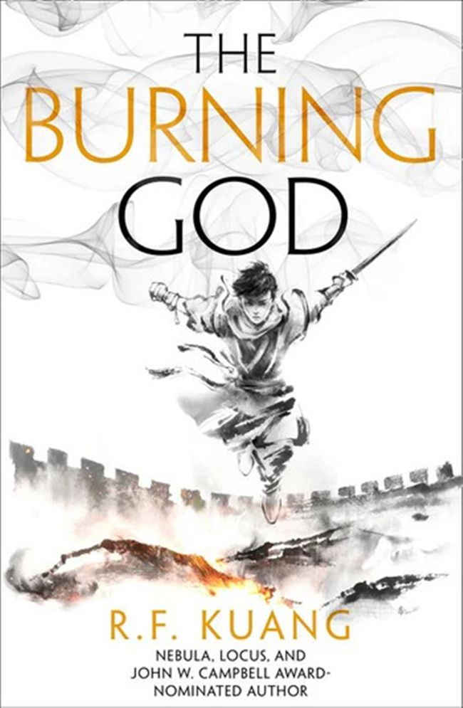

The Burning God - R.F. Kuang
Rp17.999
RentSinopsis
After saving her nation of Nikan from foreign invaders and battling the evil Empress Su Daji in a brutal civil war, Fang Runin was betrayed by allies and left for dead. Despite her losses, Rin hasn't given up on those for whom she has sacrificed so much—the people of the southern provinces and especially Tikany, the village that is her home. Returning to her roots, Rin meets difficult challenges—and unexpected opportunities. While her new allies in the Southern Coalition leadership are sly and untrustworthy, Rin quickly realizes that the real power in Nikan lies with the millions of common people who thirst for vengeance and revere her as a goddess of salvation. Backed by the masses and her Southern Army, Rin will use every weapon to defeat the Dragon Republic, the colonizing Hesperians, and all who threaten the shamanic arts and their practitioners. As her power and influence grows, though, will she be strong enough to resist the Phoenix's intoxicating voice urging her to burn the world and everything in it?
Detail Buku
ISBN
9780008339180
Bahasa
English
Halaman
640
Lebar
13.0 cm
Panjang
19.9 cm
Berat
0.457 kg